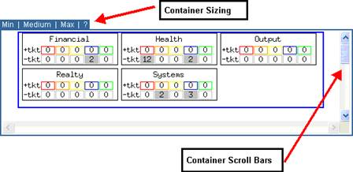
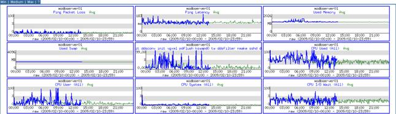
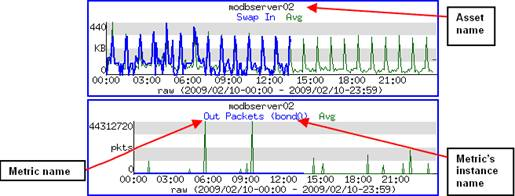
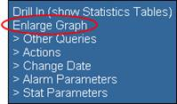
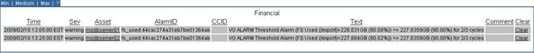
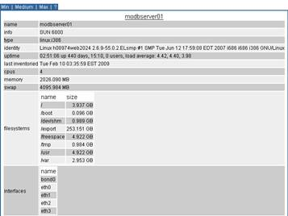

Visualizer has the ability to display large quantities of data, in a variety of formats, on a single page. Placing data in individual frames, called containers, within a page allows you to control the amount of data you view at any given point. Visualizer can display up to four containers on a page: connectivity container, statistical graph container, alarm records container, and inventory resources container. These four container types are discussed in further detail in the following sections.
Each container can be expanded or contracted by the user with the Min Medium Max controls located at the top left corner of each container. Clicking on the Min option reduces the container to the point where only the Min Medium Max controls are visible. The Max option allows the container to use as much space as needed to display all the contents. The Medium option reduces the amount of space the container takes up on the page but displays scroll bars that allow you to see all the contents in sections.

Figure 3.17 – Example of Container Sizing
The Connectivity container displays the relationships between and among individual groups or assets in a diagram form as shown in the following example. The selected asset’s name appears in bold.
Figure 3.18 – Connectivity Container Example
The Statistical Graph container displays statistical metrics for individual assets in graph form as shown in the following example. Details expressed in blue reflects current data, data in green represents the average value of data in the profile. Please note, when the date range is in 48 hours, the blue line will extend till current time, and green line will extend till the midnight of current day. When the date range exceeds 48 hours and within a month, the blue line will extend till midnight of previous day, and green line will extend till the midnight of current day. When the date range exceeds a month, the blue line will extend till midnight of previous day, and green line will only extend till the last day of previous month.

Figure 3.19 – Statistical Graph Container Example

Figure 3.20 – Statistical Graph Contents
On the Statistical Graph, the asset name and metric name will display above each graph. The date range will display at the bottom of each graph. If the metric is unique for the asset, only the metric name will display. If the metric has more than one instance, the instance name will display in a bracket after the metric’s name. This is the Visualizer standard, but exceptions still exist.
In pop-up menu, a special feature, Enlarge Graph, is applied only for statistical graphs to enlarge the size of the statistical graph for a clearer view, as shown in Figure 3.21. Shrink Graph, as shown in Figure 3.22, is available after you enlarging the graph and allows you to shrink the graph to the regular size.
|
 Figure 3.21 – Enlarge Graph Feature |
Figure 3.22 – Shrink Graph Feature |
The Alarm Records container provides a table format with alarm details for an individual asset as shown in the example below. Typically, there are alarms data in the Alarm Records container only when faults were generated. It is usually displayed the most recent ticketed alarms within the past four hours as long as the alarm does not get clear. Otherwise, the alarm container will return null or no data. Some related information would be found in section 4.12.

Figure 3.23 – Alarm Records Summary Container Example
The Inventory Resources container provides a different table format that has the details of an individual asset as shown in the example below (the same as “Factsheet” in previous release).
